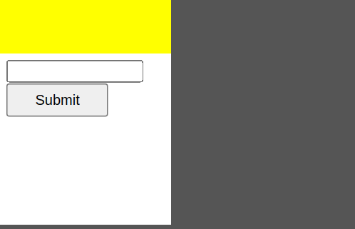
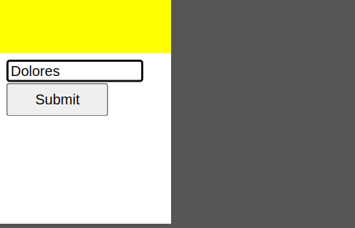
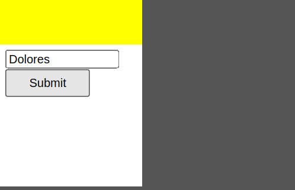

{
"event": "reset",
"goal": "Enter \"Dolores\" into the text field and press Submit.",
"screenshot": "0000.png",
"sha256": "385483ce340ce304c912891d7ca3a6a1415e19f0aa16bdf6e94938447c3ff631"
}{
"event": "candidate_prediction",
"prediction": {
"raw": "[0.21, 0.29]",
"point": [
0.21,
0.29
],
"input_query": "text field",
"inference_seconds": 0.3745929319411516,
"hit": true
}
}
{
"event": "candidate_action",
"action": {
"action": "INPUT",
"value": "Dolores",
"position": [
0.21,
0.29
]
},
"reward": 0.0,
"terminated": false,
"truncated": false,
"task_info": {
"REWARD_GLOBAL": 0,
"RAW_REWARD_GLOBAL": 0,
"REWARD_REASON": null,
"DONE_GLOBAL": false,
"EPISODE_ID": 0,
"TASK_READY": true
},
"executed_code": "mouse_click(104.58, 93.08999999999999)\nkeyboard_type('Dolores')",
"execution_error": "",
"screenshot": "0001.png",
"sha256": "782ba5754a99d264bce3ef36ed0741696abf75060fa0b149ea48cfa708e8af9b"
}{
"event": "submit_prediction",
"prediction": {
"raw": "[0.189,0.38]",
"point": [
0.189,
0.38
],
"input_query": "Previous proposed action: {\"action\":\"INPUT\",\"value\":\"Dolores\",\"position\":[0.21,0.29]}\nRecheck the current screenshot and return the target location.\nSubmit button",
"inference_seconds": 0.46377022564411163
}
}
{
"event": "submit_action",
"action": {
"action": "CLICK",
"value": null,
"position": [
0.189,
0.38
]
},
"reward": 1.0,
"terminated": true,
"truncated": false,
"task_info": {
"REWARD_GLOBAL": 0.997969,
"RAW_REWARD_GLOBAL": 1,
"REWARD_REASON": null,
"DONE_GLOBAL": true,
"EPISODE_ID": 1,
"TASK_READY": true
},
"executed_code": "mouse_click(94.122, 121.98)",
"execution_error": "",
"screenshot": "0002.png",
"sha256": "b6a5679bf3b899a1ade81327a7df321353dded025d175877464397ab9953aecf"
}{
"event": "episode_end",
"id": "enter-text-8000-normal_entry",
"task": "enter-text",
"seed": 8000,
"head": "history_target_last",
"conditional": false,
"success": true,
"reason": "success",
"source_steps": 0,
"repair_steps": 2,
"resets_after_failure": 0,
"source_model_calls_reused": 0,
"candidate_model_calls_reused": 1,
"additional_submit_calls": 1,
"prefix_matched": true,
"total_logical_model_calls": 2,
"recovery_mode": null
}